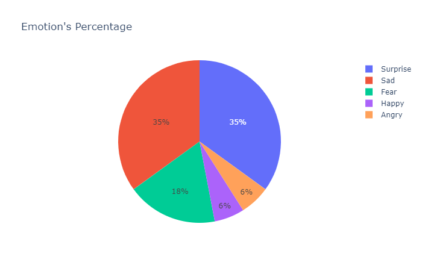

Different distant reading tools have been used, listed in the navigation bar under the section of the same name or scrolled directly on the page below. Each tool is explained in detail in its respective section. The results of these analyzes have been included and appear, alongside the analysis carried out through the close reading, within the Pavesian ontology.
To introduce the user to our analysis we have chosen to represent a simple but effective list of the most used words in the compositions of each of the authors considered, both in terms of prose and poetry. It is a preliminary and certainly elementary type of investigation, which however wants to act as a "first step" towards the subsequent, more complex, aspects dealt with.
Sentiment analysis (also known as opinion mining or emotion AI) is a NLP approach concerning the domains of text analysis and computational linguistics which aims at studying affective information.
In order to complete this task, we used a Github python tutorial providing a possible way to classify textual samples with respect to their polarity toward depression and anxiety. The training corpus consisted of 3500 tweets concerning the aforementioned aspects, and the resulting trained tool takes in input textual extracts and outputs one over three possible polarity values: positive (+1), negative (-1), or neutral (0). Generally, the texts classified as “Positive” do concern depression or anxiety, but in an objective, positive, detached way; the ones labeled as “Negative” are about the analyzed topic too, but in a more negative, involved and deeply subjective way; while the “Neutral” ones simply do not relate to the element of interest (i.e.: are not about depression at all).
Sentiment Analysis generally aims at classifying polarity toward a specific subjective/affective topic or question. In this specific case, the model on which we based the analysis was trained on tweets about anxiety and depression. Even if the domain of training differs from the domain of application, the analogy of the focal analyzed topic allowed us to retrieve results which were relatable in most cases.
Similar to what happened for the emotion detection, also in this case we exploited an AI tool to try to categorically classify our texts with respect to really complex aspects, i.e. depressive tendencies and anxiety externations. This process allowed us to compare with respect to other literary and contenutistic features the texts of our collection which presented the same polarity, in order to look for possible patterns.
Even if the results we obtained are in most cases relatable, we noticed some misattributions. There are many reasons why an AI classifier can misinterpret the polarity of a given text with respect to a delicate and highly complex concept such as depression. Among the most common causes, apart from the inner specificity of the topic itself, we can mention: issues in managing negations, unusual word order, lexical modifiers and intensifiers, sarcasm and irony.
| The thing most feared in secret always happens. I write: oh Thou, have mercy. And then? All it takes is a little courage. The more the pain grows clear and definite, the more | -1 |
| the instinct for life asserts itself and the thought of suicide recedes. It seemed easy when I thought of it. Weak women have done it. It takes humility, not pride. All this is sickening. Not words. An act. I won't write any more. | -1 |
| The cadence of suffering has begun. Every evening, as dusk settles, my heart constricts until night has come. | -1 |
| A trip to Tuscany and Emilia. I thought of my essay on poetry and popular culture; thought, above all, of the connection between the countryside and culture, of the natural (botanical and mineral) roots of art. At Florence (Rovezzano) and in Val Pesa, Elsa-Siena-you felt why that land has given birth to art. The country expresses the grace of Florence and Siena. But when a civilization is no longer linked with the country, what will be the radical sources of its culture? Are we henceforward to be cut off from the influx of botany, minerals, the seasonal changes of the countryside upon art? It would seem so. | 0 |
| Good. She has written. I have talked to her long distance. She does not want me at once. Oh well, that is fine. Work. | 1 |
| One does not kill oneself for love of a woman, but because love-any love-reveals us in our nakedness, our misery, our vulnerability, our nothingness. | 1 |
emotion detection - also known as emotion recognition - consists in the process of identification of basic feelings. This can be done in many ways and starting from very different input materials; in our case, this approach is exploited in its algorithmical expression, by applying an AI system to textual input.
For the scope of our analysis, we used the emotion analyser provided in the web app exploiting the text2emotion python package to extract the basic emotions from text samples. In particular, this tool takes in input a textual string and outputs a dictionary containing five key-value pairs, whose keys are the names of the five basic emotions and the values are the relative presences in the text, expressed as percentages. Furthermore, a pie chart representing the distribution of the five different emotions is provided to give visual feedback too, in order to help those users who are not acquainted with data structures.
For the purposes of the present project, we decided to take into account only the two most present emotions for each diary page or poem. The relation between the text sample and the extracted emotion is then represented in the ontology through two subproperties: hasPrimaryEmotion and hasSecondaryEmotion, so to allow the user to retrieve texts with similar moods.
This tool allowed us to associate diary pages and poems with respect to the emotions automatically detected, providing a rudimentary type of classification. Further, the distant reading approach grants some degree of formalization of a matter which is generally conceived as largely subjective (i.e.: moods and emotions).
First of all, the limited number of basic emotions (only five) makes likely the presence of a not so determinant emotion among the two most relevant, especially in the case in which two emotions equally score the highest percentage or representativeness. Accordingly, our ontology may present as a secondary emotion, one which is not so relevant in order to get the mood of the textual sample.
As an example of the functioning of the app, we input the last page of This Business of Living. The output seems to be particularly consistent with the expectations raised while reading the textual sample: the two most relevant emotions are surprise and sadness (whose percentages are equal), followed by fear.
| The thing most feared in secret always happens. I write: oh Thou, have mercy. And then? All it takes is a little courage. The more the pain grows clear and definite, the more the instinct for life asserts itself and the thought of suicide recedes. It seemed easy when I thought of it. Weak women have done it. It takes humility, not pride. All this is sickening. Not words. An act. I won't write any more. |
 { "Happy": 0.06, "Angry": 0.06, "Surprise": 0.35, "Sad": 0.35, "Fear": 0.18 } |
We will exploit this statistical model to extract the hidden semantic structure of every text, subcorpora and global corpus.
The first visualization that we have decided to show is the word cloud, that is the graphic representation of the word frequencies of the individual texts taken into consideration as well as of the corpus they compose. We used "Cirrus" as a tool, via the "Voyant" platform. The word cloud positions words in such a way that the most frequently occurring terms are centrally positioned and have the largest size. The algorithm scrolls the list drawing the words as close as possible to the center of the visualization, also including small words within the spaces left by more frequent words, therefore larger. It is important to understand that the color of words and their absolute position are not significant. From a graphic point of view, the choice of positioning the adjacent word clouds allows the user to keep the position of the visualization inherent to the entire corpus fixed and to explore the individual texts, divided into prose and poetry, thus giving the chance to compare them. This tool intends to introduce the user to our analysis, since in a still superficial way it allows us to observe the presence of indicative terms. For example, the presence of the term "like", which dominates the world cloud of the corpus, is found with greater relevance in those that are poetic texts and can be interpreted as a symptom of a generally figurative language rich in metaphors or similes. The contrast between terms such as white / black or death / life in Pavese's poems is also interesting, or the presence of verbs referring to writing and thought (think, write, am ...).
In this type of visualization, which makes sense, in our case, only applied to the whole corpus because it allows a comparison, each document must be conceived as a dimension, and each word frequency as a data point. In the resulting visualization, the words that are grouped are associated, that is, they follow a similar usage in the corpus. The scatterplot is presented in the main display in the tool with a legend in the top left hand corner. Hovering over a word in the graph will display more information about the frequency of occurrence of that word. We can see that the corpus of the two female authors are more similar to each other. The colours of the points in the graph represent the thematic clusters. Among these, some significant examples:
Trends is a visualization tool that represents the frequencies of terms across documents in a corpus or across segments in a document, depending on the mode. Each series in the graph is coloured according to the word it represents, at the top of the graph a legend displays which words are associated with which colours. You can click on words in the legend to toggle their visibility. Hovering over any point in the graph causes a callout box to appear with information about the point, including the word, the frequency (raw or relative depending on mode), the document or document segment. In our case, we decided to identify pairs of terms, whose occurrence or co-occurrence seemed relevant. Specifically, we focused on couples: death / suicide, love / work, woman / women, pleasure / suffer. The analysis was made for "The Business of Living", our reference text for the final ontology, alongside the general corpus, which also includes the compositions of Sylvia Plath and Virginia Woolf. The considerations with respect to the pairs of words that may be interesting and accompany the user's interpretation are:
In the complete corpus, suffer and pleasure appear more or less linearly in every text. In the sense that each text addresses both issues and that their presence is more or less the same in each text, it should be noted that the word suffer is more present than the word pleasure.
testo
testo
The Topics tool is designed to help you understand what topics (groups of terms) exist and how they are distributed. We decided to carry out this type of analysis for two different realities. First of all "The Business of Living" by Cesare Pavese, which, as a single document, is divided into segments of equal length for the modeling of the topic. Thereafter for the entire corpus, where topic modeling is performed on each document. Topic modeling uses a technique called "latent Dirichlet allocation”. To keep it simple, words in each document are randomly assigned to a specified number of topics. The algorithm then goes through a series of iterations, which we chose to set at 5500, and tries to refine the model of which terms are best suited to which arguments. The algorithm starts by randomly assigning words to arguments and you are likely to get different results. This can be frustrating, but at the same time, there's a good chance that the more times it runs the more the arguments will have internal consistency. In the table below, it is possible to observe the topics that we have extracted through the observed word clusters.
| This Business of Living | Whole corpus |
|---|---|
| Dates, months : related to diary structure + poetry’s dates | Woolf’s production (references to her own literary works) |
| Symbolism, poetry and memory | Ancient literary works (greek, book, chapter) |
| Myth and culture | Visual imagery of quiet and relief |
| Physical aging (body, old, born..) | Male - Female interactions |
| Visual aspects of poetry (images, poems) | Literature-related field (review, method, content) |
| Language and dialogue | Time-related expressions (morning, yesterday, days) |
| Sacred, gods, superstition | Writers’ activities (think, write, book, reading …) |
| Experiences and imagination | Time passing and aging (day, come, death, years, reached) |
| Work, art and knowledge | Feminine (lady, women, young …) |
| Love (man, woman, love) | description of experiences and physical sensations and perceptions (fresh, air, colors… ) |